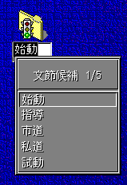

The instance of the default Candidate Part Class is an object window which creates of Candidate List window(actually visible window) as follows.
This candidate list window can be dragged by mouse drag button( usually
right mouse button).
WM_IMEREQUEST
IMR_CANDIDATE_SHOW
Candidate window shows the candidate list window according to the information
in IMInstance. Usually, the top-left corner of the candidate window is placed
at the position which is specified in IMInstance, but if the candidate list
window exceeds the desk top window boundary, it is adjusted. If the title
string length is 0 in CandidateList structure, the default title string
which is appropriate for the candidate style(CLS_*) is displayed.
IMR_CANDIDATE_HIDE
Candidate List window is hidden when the candidate window receives this
message.
IMR_CANDIDATE_CHANGE
Candidate List window is redrawn with the new contents in IMInstance.
IMR_CANDIDATE_CANDIDATEPOS
If the candidate list index is unchanged, Candidate list window is just
re-positioned, else the same effect with IMR_CANDIDATE_CHANGE takes place.
IMR_CANDIDATE_SELECT
Candidate list window hilites the newly selected candidate and stops hilite
state of currently selected candidate.
IMR_OTHERINFO_HWND
The owner window of the candidate list window is changed.
WM_QUERY/SETWINDOWPARAMS
Defatul candidate class supports the following control data for WM_QUERY/SETWINDOWPARAMS when WPM_CTLDATA is specified.
typedef struct _CANDCTLDATA { /* candctldata */
USHORT usSize;
ULONG ulCtlFlag;
PFNMOUNOTIFY pfnMouseNotify;
} CANDCTLDATA;
where
usSize : Size of CANDCTLDATA structure.
ulCtlFlag : flag which shows the data to query/set.
Currently only CCD_MOUSENOTIFYENTRY is available.
pfnMouseNotify : Entry point address of Mouse event notification.
If this parameter is set to 0, mouse event notification is canceled.
The mouse notification entry must conform to the following prototype.
VOID EXPENTRY MouseNotify( HIMI himi, ULONG ulMsg, ULONG ulCandIndex )
where
himi : himi whose candidate list get the mouse event
ulMsg : same as PM's mouse msg which is one of the following:
WM_MOUSEMOVE
WM_BUTTON1DOWN
WM_BUTTON1UP
WM_BUTTON1DBLCLK
WM_BUTTON2DOWN
WM_BUTTON2UP
WM_BUTTON2DBLCLK
WM_BUTTON3DOWN
WM_BUTTON3UP
WM_BUTTON3DBLCLK
WM_MOUSEMAP
WM_CHORD
WM_BUTTON1MOTIONSTART
WM_BUTTON1MOTIONEND
WM_BUTTON1CLICK
WM_BUTTON2MOTIONSTART
WM_BUTTON2MOTIONEND
WM_BUTTON2CLICK
WM_BUTTON3MOTIONSTART
WM_BUTTON3MOTIONEND
WM_BUTTON3CLICK
ulCandIndex : Candidate item index where the mouse event happened.
The following 2 special value index are passed when the message is
WM_MOUSEMOVE and the mouse pointer is outside the candidate list box.
CI_PREVPAGE(0xfffffffe) : When the mouse pointer is placed above the top
item in the list which is currently visible.
CI_NEXTPAGE(0xffffffff) : When the mouse pointer is placed below the bottom
item in the list which is currently visible.